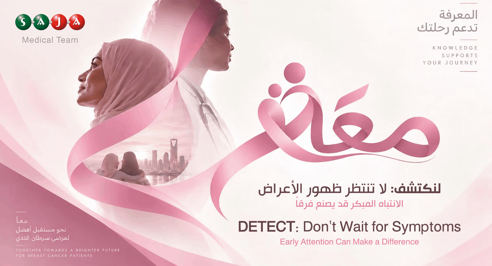

| Dear Colleagues, |
Early breast cancer may cause no noticeable symptoms, which is one reason screening is important.
At the same time, knowing what changes deserve medical attention can help support timely diagnosis.
Changes to be aware of include a new breast or underarm lump or thickening, changes in breast size or shape, dimpling or other skin changes, changes in the nipple, and unusual or bloody nipple discharge. Most breast changes are not cancer, but an unusual or persistent change should be assessed by a healthcare professional.
Screening is different from investigating a symptom: screening aims to identify breast cancer in people who do not have symptoms. Mammography is the standard screening test for most women.
| زملاءنا الأعزاء، |
قد لا يسبب سرطان الثدي في مراحله المبكرة أي أعراض ملحوظة، ولهذا يُعد الفحص المبكر مهمًا.
وفي الوقت نفسه، فإن معرفة التغيرات التي تستدعي استشارة الطبيب تساعد على الوصول إلى التشخيص في الوقت المناسب.
من التغيرات التي ينبغي الانتباه إليها: ظهور كتلة أو سماكة جديدة في الثدي أو تحت الإبط، تغير حجم أو شكل الثدي، حدوث تنقُّر أو تغيرات في الجلد، تغير في شكل الحلمة، أو ظهور إفرازات غير طبيعية أو دموية منها. معظم تغيرات الثدي ليست سرطانًا، إلا أن أي تغير غير معتاد أو مستمر يستحق التقييم من قبل مختص صحي.
ويختلف الفحص المبكر عن تقييم الأعراض؛ إذ يهدف الفحص إلى اكتشاف المرض لدى الأشخاص الذين لا تظهر لديهم أعراض. ويُعد تصوير الثدي بالأشعة (الماموغرام) الفحص الأساسي المستخدم لدى معظم النساء.
| Know what is normal for you. Seek medical advice if needed. |
| اعرف ما هو طبيعي بالنسبة لكِ، واطلب المشورة الطبية عند الحاجة. |
Regular screening | Know what is normal for you | Seek medical advice if needed |
الفحص بشكل منتظم | اعرف ما هو طبيعي بالنسبة لك | استشر مختص عند الحاجة |
References | المراجع
|
|  |